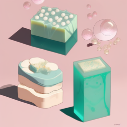

Productos Destacados

Jabón de Rosa
Hecho con pétalos de rosa frescos y aceites esenciales naturales, este jabón artesanal es perfecto para pieles sensibles y secas.
Jabón de Lavanda
Calma tu piel y tu mente con nuestro jabón de lavanda artesanal, hecho con aceites esenciales de lavanda de alta calidad.
Jabón de Limón
Este jabón refrescante y revitalizante es perfecto para usar en la ducha matutina. Hecho con aceites esenciales de limón frescos y exfoliantes naturales.
Jabón de Miel
Este jabón hidratante y suavizante está hecho con miel natural y aceites esenciales nutritivos para una piel suave y radiante.
Jabón de Avena
Este jabón suave y exfoliante está hecho con avena y aceites esenciales